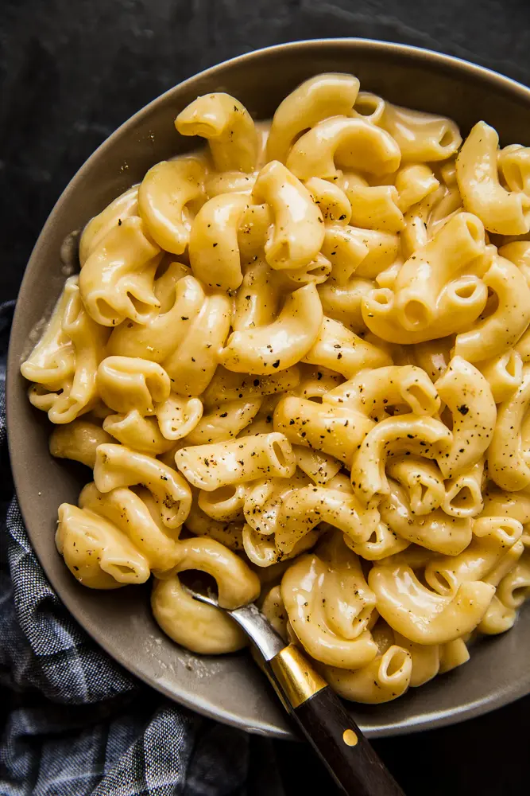

Mac and Cheese

Description
What’s easier—and way better—than instant mac and cheese?
Rich, creamy, homemade Instant Pot mac and cheese!
Ingredients
- 1 box elbow macaroni
- 1/4 cup butter
- 1/4 cup all purpose flour
- 1/2 teaspoon salt
- ground black pepper to taste
- 2 cups milk
- 2 cups shredded Cheddar cheese
Steps
- Boil macaroni for 8 minutes
- Melt butter in a pan. Add flour, salt, and pepper. Stir til smooth for 5 minutes
- Add cheese to pan, stir for 2 to 4 minutes
- Combine macaroni and sauce